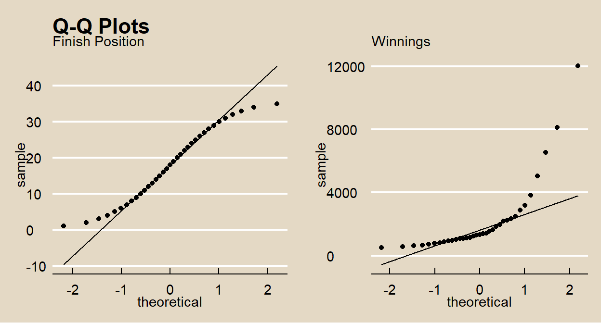
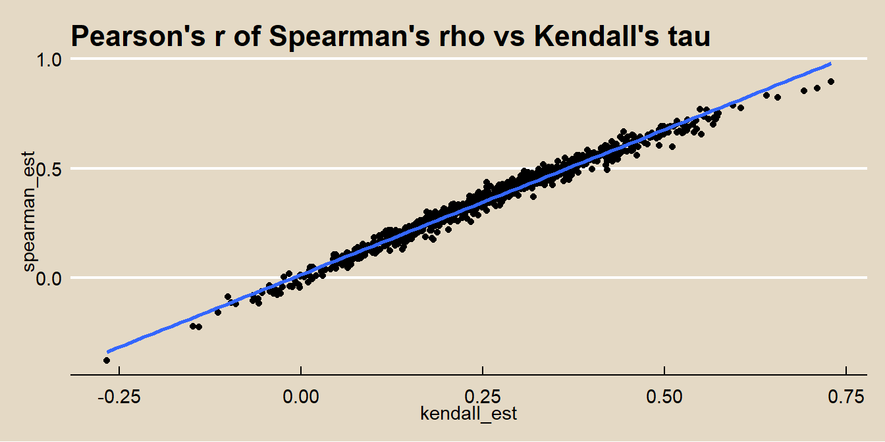

2.5 Continuous Variable Analysis
2.5.1 Correlation
Correlation measures the strength and direction of association between two variables. There are three common correlation tests: the Pearson product moment (Pearson’s r), Spearman’s rank-order (Spearman’s rho), and Kendall’s tau (Kendall’s tau).
Use the Pearson’s r if both variables are quantitative (interval or ratio), normally distributed, and the relationship is linear with homoscedastic residuals.
The Spearman’s rho and Kendal’s tao correlations are non-parametric measures, so they are valid for both quantitative and ordinal variables and do not carry the normality and homoscedasticity conditions. However, non-parametric tests have less statistical power than parametric tests, so only use these correlations if Pearson does not apply.
2.5.1.1 Pearson’s r
Pearson’s \(r\)
\[r = \frac{\sum{(X_i - \bar{X})(Y_i - \bar{Y})}}{\sqrt{\sum{(X_i - \bar{X})^2 \sum{(Y_i - \bar{Y})^2}}}} = \frac{cov(X,Y)}{s_X s_Y}\]
estimates the population correlation \(\rho\). Pearson’s \(r\) ranges from \(-1\) (perfect negative linear relationship) to \(+1\) (perfect positive linear relationship, and \(r = 0\) when there is no linear relationship. A correlation in the range \((.1, .3)\) is condidered small, \((.3, .5)\) medium, and \((.5, 1.0)\) large.
Pearson’s \(r\) only applies if the variables are interval or ratio, normally distributed, linearly related, there are minimal outliers, and the residuals are homoscedastic.
Test \(H_0: \rho = 0\) with test statistic
\[T = r \sqrt{\frac{n-2}{1-r^2}}.\]
The nascard data set consists of \(n = 898\) races from 1975 - 2003.
nascard <- read.fwf(
file = url("http://jse.amstat.org/datasets/nascard.dat.txt"),
widths = c(5, 6, 4, 4, 4, 5, 9, 4, 11, 30),
col.names = c('series_race', 'year', 'race_year', 'finish_pos', 'start_pos',
'laps_comp', 'winnings', 'num_cars','car_make', 'driver')
)
nascard_sr1 <- nascard[nascard$series_race == 1,]
glimpse(nascard_sr1)## Rows: 35
## Columns: 10
## $ series_race <dbl> 1, 1, 1, 1, 1, 1, 1, 1, 1, 1, 1, 1, 1, 1, 1, 1, 1, 1, 1...
## $ year <dbl> 1975, 1975, 1975, 1975, 1975, 1975, 1975, 1975, 1975, 1...
## $ race_year <dbl> 1, 1, 1, 1, 1, 1, 1, 1, 1, 1, 1, 1, 1, 1, 1, 1, 1, 1, 1...
## $ finish_pos <dbl> 1, 2, 3, 4, 5, 6, 7, 8, 9, 10, 11, 12, 13, 14, 15, 16, ...
## $ start_pos <dbl> 1, 2, 25, 27, 22, 35, 3, 21, 33, 10, 17, 24, 6, 28, 18,...
## $ laps_comp <dbl> 191, 191, 184, 183, 178, 175, 172, 168, 167, 166, 166, ...
## $ winnings <dbl> 12035, 8135, 6535, 5035, 3835, 2885, 3185, 2485, 2335, ...
## $ num_cars <dbl> 35, 35, 35, 35, 35, 35, 35, 35, 35, 35, 35, 35, 35, 35,...
## $ car_make <chr> "Matador ", "Mercury ", "Chevrolet ", "Dodge ...
## $ driver <chr> "BobbyAllison ", "DavidPearson ...In race 1 of 1975 \((n = 35)\), what was the correlation between the driver’s finishing position and prize?
Explore the relationship with a scatterplot. As expected, there is a negative relationship between finish position and winnings, but it is non-linear. However, 1/winnings may be linearly related to finish position.
p1 <- ggplot(data = nascard_sr1, aes(x = finish_pos, y = winnings)) +
geom_point() +
geom_smooth(method = "lm", se = FALSE) +
theme_mf() +
labs(title = "Pearson's Rho", subtitle = "")
p2 <- ggplot(data = nascard_sr1, aes(x = finish_pos, y = 1/winnings)) +
geom_point() +
geom_smooth(method = "lm", se = FALSE) +
theme_mf() +
labs(title = "Pearson's Rho", subtitle = "y = 1 / winnings")
gridExtra::grid.arrange(p1, p2, nrow = 1)(*I tried several variable tranformations and chose the one producing the highest \(R^2\) that also had a normal distribution in each variable.)
#summary(lm(winnings ~ finish_pos, data = nascard_sr1)) # r2 = .5474
#summary(lm(log(winnings) ~ finish_pos, data = nascard_sr1)) # r2 = .9015
nascard_lm <- lm(1/winnings ~ finish_pos, data = nascard_sr1) # r2 = .9509
#summary(lm(winnings ~ log(finish_pos), data = nascard_sr1)) # r2 = .883
#summary(lm(log(winnings) ~ log(finish_pos), data = nascard_sr1)) # r2 = .9766
#summary(lm(winnings ~ log(finish_pos), data = nascard_sr1)) # r2 = .883
coef(nascard_lm)## (Intercept) finish_pos
## -0.000018 0.000045Finish position and prize are ratio variables, so the Pearson’s r applies. Check whether each variable is normally distributed.
p1 <- ggplot(nascard_sr1, aes(sample = finish_pos)) +
stat_qq() +
stat_qq_line() +
theme_mf() +
labs(title = "Q-Q Plots", subtitle = "Finish Position")
p2 <- ggplot(nascard_sr1, aes(sample = winnings)) +
stat_qq() +
stat_qq_line() +
theme_mf() +
labs(title = "", subtitle = "Winnings")
gridExtra::grid.arrange(p1, p2, nrow = 1)
The normal distribution plots look good. You can also use the Anderson-Darling statistical test.
##
## Anderson-Darling normality test
##
## data: nascard_sr1$finish_pos
## A = 0.4, p-value = 0.4##
## Anderson-Darling normality test
##
## data: 1/nascard_sr1$winnings
## A = 0.3, p-value = 0.5Both fail to reject the normality null hypothesis.
Pearson’s \(r\) is
x <- nascard_sr1$finish_pos
y <- 1/nascard_sr1$winnings
(r = sum((x - mean(x)) * (y - mean(y))) /
sqrt(sum((x - mean(x))^2) * sum((y - mean(y))^2)))## [1] 0.98Test \(H_0: \rho = 0\) with test statistic \(T\).
## [1] 25## [1] 0.000000000000000000000035\(P(T>.9752) < .0001\), so reject \(H_0\) that the correlation is zero. cor.test() performs these calculations. Specify method = "pearson".
cor.test(
x = nascard_sr1$finish_pos,
y = 1/nascard_sr1$winnings,
alternative = "two.sided",
method = "pearson"
)##
## Pearson's product-moment correlation
##
## data: nascard_sr1$finish_pos and 1/nascard_sr1$winnings
## t = 25, df = 33, p-value <0.0000000000000002
## alternative hypothesis: true correlation is not equal to 0
## 95 percent confidence interval:
## 0.95 0.99
## sample estimates:
## cor
## 0.982.5.1.2 Spearman’s Rho
Spearman’s \(\rho\) is the Pearson’s r applied to the sample variable ranks. Let \((X_i, Y_i)\) be the ranks of the \(n\) sample pairs with mean ranks \(\bar{X} = \bar{Y} = (n+1)/2\). Spearman’s rho is
\[\hat{\rho} = \frac{\sum{(X_i - \bar{X})(Y_i - \bar{Y})}}{\sqrt{\sum{(X_i - \bar{X})^2 \sum{(Y_i - \bar{Y})^2}}}}\]
Spearman’s rho is a non-parametric test, so there is no associated confidence interval.
From the nascard study, what was the correlation between the driver’s starting position start_pos and finishing position finish_pos? From the scatterplot, there does not appear to be much of a relationship.
nascard_sr1 %>%
ggplot(aes(x = start_pos, y = finish_pos)) +
geom_point() +
geom_smooth(method = "lm", se = FALSE) +
theme_mf() +
labs(title = "Spearman's Rho")## `geom_smooth()` using formula 'y ~ x'
Both star_pos and finish_pos are ordinal variables, so use Spearman’s rho instead of Pearson. Normally, you replace the variable values with their ranks, but in this case, the values are their ranks. After that, Spearman’s \(\rho\) is the same as Pearson’s r.
x <- rank(nascard_sr1$start_pos)
y <- rank(nascard_sr1$finish_pos)
(rho = sum((x - mean(x)) * (y - mean(y))) /
sqrt(sum((x - mean(x))^2) * sum((y - mean(y))^2)))## [1] -0.038Test \(H_0: \rho = 0\) with test statistic \(T\).
## [1] -0.22## [1] 0.83\(P(T>.2206) = .8268\), so do not reject \(H_0\) that the correlation is zero. cor.test() performs these calculations. Specify method = "spearman".
cor.test(
x = nascard_sr1$start_pos,
y = nascard_sr1$finish_pos,
alternative = "two.sided",
method = "spearman"
)##
## Spearman's rank correlation rho
##
## data: nascard_sr1$start_pos and nascard_sr1$finish_pos
## S = 7414, p-value = 0.8
## alternative hypothesis: true rho is not equal to 0
## sample estimates:
## rho
## -0.0382.5.1.3 Kendall’s Tau
The Kendall Rank correlation coefficient (Kendall’s tau) measures the relationship between ranked variables. (see also Statistics How To). Let \((X_i, Y_i)\) be the ranks of the \(n\) sample pairs. For each \(X_i\), count \(Y > X_i\). The total count is \(k\). Kendall’s tau is
\[\hat{\tau} = \frac{4k}{n(n-1)} -1\]
If \(X\) and \(Y\) have the same rank orders, \(\hat{\tau} = 1\), and if they have opposite rank orders \(\hat{\tau} = -1\). Test \(H_0: \tau = 0\) with test statistic
\[Z = \hat{\tau} \sqrt{\frac{9n(n - 1)}{2(2n + 5)}}.\]
Kendall’s tau is a non-parametric test, so there is no associated confidence interval.
From the nascard study, what was the correlation between the driver’s starting position start_pos and finishing position finish_pos? Spearman’s rho was \(\hat{\rho} = -0.038\). For Kendall’s tau, for each observation, count the number of other observations where both start_pos and finish_pos is larger. The sum is \(k = 293\). Then calculate Kendall’s \(\tau\) is \(\hat{\tau} = \frac{4 * 293}{35(35-1)} -1 = -.0151\).
n <- nrow(nascard_sr1)
k <- 0
for (i in 1:n) {
for(j in i:n) {
k = k + if_else(
nascard_sr1[j, ]$start_pos > nascard_sr1[i, ]$start_pos
& nascard_sr1[j, ]$finish_pos > nascard_sr1[i, ]$finish_pos, 1, 0)
}
}
(k)## [1] 293## [1] -0.015Test \(H_0: \tau = 0\) with test statistic \(T\).
## [1] -0.13## [1] 0.9\(P(|T| > 0.128) = .8991\), so do not reject \(H_0\) that the correlation is zero. cor.test() performs these calculations. Specify method = "kendall".
cor.test(
x = nascard_sr1$start_pos,
y = nascard_sr1$finish_pos,
alternative = "two.sided",
method = "kendall"
)##
## Kendall's rank correlation tau
##
## data: nascard_sr1$start_pos and nascard_sr1$finish_pos
## T = 293, p-value = 0.9
## alternative hypothesis: true tau is not equal to 0
## sample estimates:
## tau
## -0.015Here is a fun way to tie Pearson, Spearman, and Kendal together: Calculate Spearman’s rho and Kendall’s tau for all 898 races in the nascard data set and calculate the Pearson correlation of their values!
nascard_smry <- nest(nascard, -c(series_race, year)) %>%
mutate(
spearman = map(data, ~ cor.test(.$start_pos, .$finish_pos,
alternative = "two.sided",
method = "spearman")),
spearman_est = unlist(map(spearman, ~ .$estimate)),
spearman_p = unlist(map(spearman, ~ .$p.value)),
kendall = map(data, ~ cor.test(.$start_pos, .$finish_pos,
alternative = "two.sided",
method = "kendall")),
kendall_est = unlist(map(kendall, ~ .$estimate)),
kendall_p = unlist(map(kendall, ~ .$p.value))
)nascard_smry2 <- nascard_smry %>%
group_by(year) %>%
summarize(
spearman_r = mean(spearman_est),
kendall_tau = mean(kendall_est)
) %>%
pivot_longer(cols = c(spearman_r, kendall_tau),
names_to = "method", values_to = "estimate")
ggplot(nascard_smry2, aes(x = year, color = method)) +
geom_line(aes(y = estimate)) +
theme_mf() +
scale_color_mf() +
labs(title = "Average Rank Correlations vs Year", color = "")In terms of significance, the two tests usually return the same results.
table(
ifelse(nascard_smry$spearman_p < .05, "sig", "insig"),
ifelse(nascard_smry$kendall_p < .05, "sig", "insig")
)##
## insig sig
## insig 344 18
## sig 11 525Calculate the Pearson coefficient of the relationship between Spearman’s rho and Kendall’s tau.
ggplot(data = nascard_smry, aes(x = kendall_est, y = spearman_est)) +
geom_point() +
geom_smooth(method = lm, se = FALSE) +
theme_mf() +
labs(title = "Pearson's r of Spearman's rho vs Kendall's tau")## `geom_smooth()` using formula 'y ~ x'
The scatterplot with fitted line has r-squared equal to the Pearson coefficient squared.
cor.test(
x = nascard_smry$spearman_est,
y = nascard_smry$kendall_est,
alternative = "two.sided",
method = "pearson"
)$estimate^2## cor
## 0.98## [1] 0.98